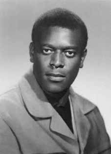

Oswaldo
Orlando
da Costa
BIOGRAFIA
Osvaldo Orlando da Costa, o Osvaldão, era esportista, engenheiro, oficial da reserva do Exército e membro do Partido Comunista do Brasil (PCdoB), organização por meio da qual embarcou na luta armada. Foi um dos primeiros participantes da Guerrilha do Araguaia, na região do Bico do Papagaio, próxima da fronteira entre o Pará e o Tocantins, local onde foi visto com vida pela última vez. Segundo registros oficiais, é dado como morto, embora seus restos mortais nunca tenham sido encontrados.
Ainda antes do golpe, na década de 1950, Osvaldão foi campeão de boxe amador, no Rio de Janeiro, e se tornou oficial de reserva do Exército brasileiro após cursar o Centro de Preparação de Oficiais da Reserva (CPOR). Nunca, porém, chegou a servir às Forças Armadas. Pelo contrário. Mais tarde, iria à Tchecoslováquia, aliada da União das Repúblicas Socialistas Soviéticas (URSS), para se formar engenheiro na Universidade de Praga.
Próximo ao término de seu curso, retornou ao Brasil. Entre 1966 e 1967, rumou ao Araguaia, onde seria responsável pela criação da guerrilha de resistência à ditadura. Instalou-se e fez amizade com a maioria dos camponeses, garimpeiros e ribeirinhos. Ninguém conhecia a área tão bem quanto Osvaldão. Era muito querido e respeitado pela população e também por seus companheiros de militância. Dizia-se que era uma figura inconfundível: forte, negro, com quase dois metros de altura. Tornou-se uma lenda local, por suas habilidades, capacidade de liderança e espírito meigo e afetuoso.
Liderou diversas incursões da guerrilha contra o Exército. Acreditava-se que jamais seria pego ou morto pelo exército. Em 1974, foi traído por um camponês local, Arlindo Piauí, que teria entregado Osvaldão às Forças Armadas. As versões divergem: ele pode ter morrido nas mãos do próprio Piauí ou ter sido preso e posteriormente fuzilado. Conta-se que, uma vez morto, seu corpo mutilado teria sido exibido como troféu em várias localidades da região, com o objetivo de extinguir qualquer vestígio do mito que já se tornara.
Osvaldo Orlando da Costa, known as Osvaldão, was an athlete, engineer, Army reserve officer and member of the Communist Party of Brazil (PCdoB), the organization through which he embarked on the armed struggle. He was one of the first participants in the Araguaia Guerrilla, in the Bico do Papagaio region, close to the border between Pará and Tocantins, where he was last seen alive. According to official records, he is presumed dead, although his remains were never found.
Even before the coup, in the 1950s, Osvaldão was an amateur boxing champion in Rio de Janeiro, and became a reserve officer in the Brazilian Army after attending the Reserve Officer Preparation Center (CPOR). However, he never served in the Armed Forces. On the contrary. Later, he would go to Czechoslovakia, an ally of the Union of Soviet Socialist Republics (USSR), to train as an engineer at the University of Prague.
Near the end of his course, he returned to Brazil. Between 1966 and 1967, he headed to Araguaia, where he would be responsible for creating the guerrilla movement to resist the dictatorship. He settled in and made friends with most of the peasants, miners and riverside dwellers. No one knew the area as well as Osvaldão. He was very loved and respected by the population and also by his fellow activists. It was said that he was an unmistakable figure: strong, black, almost two meters tall. He became a local legend, due to his skills, leadership abilities and gentle, affectionate spirit.
He led several guerrilla raids against the Army. It was believed that he would never be caught or killed by the army. In 1974, he was betrayed by a local peasant, Arlindo Piauí, who allegedly handed Osvaldão over to the Armed Forces. Versions differ: he may have died at the hands of Piauí himself or been arrested and later shot. It is said that, once dead, his mutilated body would have been displayed as a trophy in several locations in the region, with the aim of extinguishing any trace of the myth that he had already become.
Osvaldo Orlando da Costa, conocido como Osvaldão, fue deportista, ingeniero, oficial de reserva del Ejército y miembro del Partido Comunista de Brasil (PCdoB), organización a través de la cual se embarcó en la lucha armada. Fue uno de los primeros participantes en la Guerrilla de Araguaia, en la región de Bico do Papagaio, cerca de la frontera entre Pará y Tocantins, donde fue visto con vida por última vez. Según registros oficiales se le da por muerto, aunque sus restos nunca fueron encontrados.
Incluso antes del golpe, en la década de 1950, Osvaldão era campeón de boxeo amateur en Río de Janeiro y se convirtió en oficial de reserva en el ejército brasileño después de asistir al Centro de Preparación de Oficiales de Reserva (CPOR). Sin embargo, nunca sirvió en las Fuerzas Armadas. De lo contrario. Posteriormente, marcharía a Checoslovaquia, aliada de la Unión de Repúblicas Socialistas Soviéticas (URSS), para formarse como ingeniero en la Universidad de Praga.
Cerca del final de su carrera, regresó a Brasil. Entre 1966 y 1967 se dirigió a Araguaia, donde sería responsable de crear el movimiento guerrillero de resistencia a la dictadura. Se instaló y trabó amistad con la mayoría de los campesinos, mineros y ribereños. Nadie conocía la zona tan bien como Osvaldão. Era muy querido y respetado por la población y también por sus compañeros activistas. Se decía que era una figura inconfundible: fuerte, negro, de casi dos metros de altura. Se convirtió en una leyenda local, debido a sus habilidades, capacidad de liderazgo y espíritu amable y afectuoso.
Lideró varias incursiones guerrilleras contra el Ejército. Se creía que el ejército nunca lo atraparía ni lo mataría. En 1974, fue traicionado por un campesino local, Arlindo Piauí, quien supuestamente entregó a Osvaldão a las Fuerzas Armadas. Las versiones difieren: pudo haber muerto a manos del propio Piauí o haber sido detenido y luego fusilado. Se dice que, una vez muerto, su cuerpo mutilado habría sido exhibido a modo de trofeo en varios lugares de la región, con el objetivo de extinguir cualquier rastro del mito en el que ya se había convertido.
CIRCUNSTÂNCIAS DA MORTE
O último registro referente a Oswaldo no Relatório Arroyo remonta a 30/12/1973. Ângelo Arroyo narra que, pela manhã, os guerrilheiros sobreviventes ao ataque sofrido pela Comissão Militar da guerrilha se separaram em cinco grupos e, à tarde, foram ouvidos ruídos de metralhadoras possivelmente na direção pela qual seguiu Oswaldo.
O livro Dossiê Ditadura se refere a relatos de moradores da região, segundo os quais Osvaldão teria sido ferido com um tiro do mateiro Arlindo Piauí e, em seguida, fuzilado por soldados. Os camponeses apontam que o evento teria se dado em abril de 1974, na localidade de Saranzal – perto de São Domingos (PA) – e que o corpo teria sido transportado até a base da Bacaba, pendurado por um helicóptero, e posteriormente a Xambioá (TO).
Os restos mortais do guerrilheiro teriam sofrido diversos tipos de mutilação, a iniciar por uma queda do helicóptero, que acabara por fraturar sua perna. Além disso, sua cabeça teria sido decepada e exposta em público, e seu cadáver se tornado alvo de chutes e pedradas, além de ter sido queimado.
Por fim, o Dossiê Ditadura sustenta que jogaram-no em uma vala chamada de “Vietnã”, no fim da pista de aterrissagem da Base militar de Xambioá. Em depoimento à CNV, no dia 20/3/2014, o segundo tenente da Polícia Militar de Goiás, João Alves de Souza rejeitou a versão de que o ex-guia Arlindo Piauí estivesse envolvido na morte de Oswaldo e alegou que esta versão foi elaborada para encobrir a responsabilidade do seu grupamento.
O agente público afirmou ter comandado o ataque ao guerrilheiro e ter participado da mutilação do corpo de Oswaldo – cortando-o em pedaços e guardando-os em caixas térmicas. Segundo João Alves, os restos mortais foram levados a Brasília em um avião, com o fim de comprovar ao presidente que um dos líderes da guerrilha estaria morto.
O relatório da CEMDP cita outra versão, referente ao depoimento do ex-mateiro José Rufino Pinheiro ao MPF, em 2001. José teria presenciado o ataque ao guerrilheiro, que teria sido alvejado de costas, enquanto comia, e levado morto da capoeira do Pedro Loca, perto da Palestina (PA), a Xambioá.
O Relatório do CIE, Ministério do Exército elenca Oswaldo em uma listagem de “subversivos” participantes da guerrilha do Araguaia, e afirma que foi morto em 7/2/1974. No Relatório do Ministério da Marinha, encaminhado ao ministro da Justiça Maurício Corrêa em 1993, consta também que o guerrilheiro foi morto em 7 de fevereiro de 1974. Além disso, o Relatório do Ministério da Aeronáutica, entregue na mesma ocasião, se refere ao Manifesto divulgado no II Congresso Nacional pela Anistia, em novembro de 1979, que declarou Oswaldo como morto ou desaparecido.
Este documento menciona também a fala do sobrevivente José Genoíno, publicada no jornal Folha de São Paulo, em 26 de julho de 1978, na qual afirma que viu uma foto de Oswaldo morto após ter sido “capturado pela repressão”. Em entrevista ao jornal O Estado de São Paulo, do dia 4 de março de 2004, o tenente coronel Sebastião Rodrigues de Moura, o Curió, afirmou que a reunião que definiu a estratégia para a captura e execução dos guerrilheiros Oswaldo Orlando da Costa e Dinalva Oliveira Teixeira teria sido realizada com a presença do então presidente Emílio Garrastazu Médici, além da alta cúpula militar do país.
Em sua fala, Curió afirmou que Osvaldão morreu numa emboscada preparada por seus subordinados e que, no processo de remoção do corpo, deixaram-no cair de um helicóptero, a uma altura de dez metros.
Em reportagem da revista Época, os ex-soldados Raimundo Pereira, Josean Soares, Antônio Fonseca e Elias Oliveira afirmaram que caminhavam diariamente em torno do túmulo de Osvaldão, na Base militar de Xambioá (TO), no período em que serviram ao Exército.
The last record referring to Oswaldo in the Arroyo Report dates back to 12/30/1973. Ângelo Arroyo narrates that, in the morning, the guerrillas who survived the attack suffered by the guerrilla's Military Commission separated into five groups and, in the afternoon, the noises of machine guns were heard, possibly in the direction in which Oswaldo followed.
The book Dossier Ditadura refers to reports from residents of the region, according to whom Osvaldão was shot by bushman Arlindo Piauí and then shot by soldiers. The peasants point out that the event took place in April 1974, in the town of Saranzal – close to São Domingos (PA) – and that the body would have been transported to the Bacaba base, suspended from a helicopter, and later to Xambioá (TO).
The guerrilla's remains would have suffered various types of mutilation, starting with a fall from the helicopter, which ended up fracturing his leg. Furthermore, his head would have been severed and exposed in public, and his corpse would have become the target of kicks and stones, in addition to being burned.
Finally, the Ditadura Dossier maintains that they threw him into a ditch called “Vietnã”, at the end of the landing strip at the Xambioá military base. In a statement to the CNV, on 3/20/2014, the second lieutenant of the Military Police of Goiás, João Alves de Souza, rejected the version that the former guide Arlindo Piauí was involved in Oswaldo's death and claimed that this version was prepared to cover up the responsibility of his group.
The public agent claimed to have commanded the attack on the guerrilla and to have participated in the mutilation of Oswaldo's body – cutting it into pieces and storing them in thermal boxes. According to João Alves, the remains were taken to Brasília on a plane, in order to prove to the president that one of the guerrilla leaders was dead.
The CEMDP report cites another version, referring to the testimony of former bushman José Rufino Pinheiro to the MPF, in 2001. José would have witnessed the attack on the guerrilla, who would have been shot in the back, while he was eating, and taken dead from the Pedro Loca capoeira, near Palestine (PA), to Xambioá.
The CIE Report, Ministry of the Army lists Oswaldo in a list of “subversives” participating in the Araguaia guerrilla, and states that he was killed on 2/7/1974. The Report of the Ministry of the Navy, sent to the Minister of Justice Maurício Corrêa in 1993, also states that the guerrilla was killed on February 7, 1974. Furthermore, the Report of the Ministry of Aeronautics, delivered on the same occasion, refers to the Manifesto published at the II National Congress by Amnesty, in November 1979, which declared Oswaldo as dead or missing.
This document also mentions the speech by survivor José Genoíno, published in the newspaper Folha de São Paulo, on July 26, 1978, in which he states that he saw a photo of Oswaldo dead after being “captured by repression”. In an interview with the newspaper O Estado de São Paulo, on March 4, 2004, Lieutenant Colonel Sebastião Rodrigues de Moura, known as Curió, stated that the meeting that defined the strategy for the capture and execution of the guerrillas Oswaldo Orlando da Costa and Dinalva Oliveira Teixeira would have been held with the presence of then president Emílio Garrastazu Médici, in addition to the country's top military leadership.
In his speech, Curió stated that Osvaldão died in an ambush prepared by his subordinates and that, in the process of removing the body, they dropped it from a helicopter, from a height of ten meters.
In a report by Época magazine, former soldiers Raimundo Pereira, Josean Soares, Antônio Fonseca and Elias Oliveira stated that they walked daily around Osvaldão's tomb, at the Xambioá military base (TO), during the period in which they served in the Army.
El último registro referido a Oswaldo en el Informe Arroyo data del 30/12/1973. Ângelo Arroyo narra que, por la mañana, los guerrilleros que sobrevivieron al ataque sufrido por la Comisión Militar de la guerrilla se separaron en cinco grupos y, por la tarde, se escucharon ruidos de ametralladoras, posiblemente en la dirección por la que seguía Oswaldo.
El libro Dossier Ditadura se refiere a informes de residentes de la región, según los cuales Osvaldão fue asesinado a tiros por el bosquimano Arlindo Piauí y luego por soldados. Los campesinos señalan que el hecho ocurrió en abril de 1974, en la localidad de Saranzal -cercana a São Domingos (PA)- y que el cuerpo habría sido transportado a la base de Bacaba, suspendido de un helicóptero, y posteriormente a Xambioá (TO).
Los restos del guerrillero habrían sufrido diversos tipos de mutilaciones, comenzando por una caída desde el helicóptero, que terminó fracturándole la pierna. Además, su cabeza habría sido cercenada y expuesta en público, y su cadáver habría sido blanco de patadas y piedras, además de ser quemado.
Finalmente, el Dossier Ditadura sostiene que lo arrojaron a una zanja llamada “Vietnã”, al final de la pista de aterrizaje de la base militar de Xambioá. En declaración a la CNV, el 20/03/2014, el subteniente de la Policía Militar de Goiás, João Alves de Souza, rechazó la versión que el ex guía Arlindo Piauí estuvo involucrado en la muerte de Oswaldo y afirmó que esa versión estaba preparada para encubrir la responsabilidad de su grupo.
El agente público afirmó haber ordenado el ataque a la guerrilla y haber participado en la mutilación del cuerpo de Oswaldo, cortándolo en pedazos y almacenándolos en cajas térmicas. Según João Alves, los restos fueron trasladados a Brasilia en un avión, para demostrarle al presidente que uno de los líderes guerrilleros estaba muerto.
El informe del CEMDP cita otra versión, refiriéndose al testimonio del ex bosquimano José Rufino Pinheiro ante el MPF, en 2001. José habría presenciado el ataque al guerrillero, que habría sido baleado en la espalda, mientras comía, y trasladado muerto de la capoeira Pedro Loca, cerca de Palestina (PA), a Xambioá.
El Informe CIE del Ministerio del Ejército incluye a Oswaldo en una lista de “subversivos” participantes en la guerrilla de Araguaia, y afirma que fue asesinado el 7/2/1974. El Informe del Ministerio de Marina, enviado al Ministro de Justicia Maurício Corrêa en 1993, también afirma que el guerrillero fue asesinado el 7 de febrero de 1974. Además, el Informe del Ministerio de Aeronáutica, entregado en la misma ocasión, se refiere al Manifiesto publicado en el II Congreso Nacional por Amnistía, en noviembre de 1979, que declaró a Oswaldo muerto o desaparecido.
Este documento también menciona el discurso del sobreviviente José Genoíno, publicado en el diario Folha de São Paulo, el 26 de julio de 1978, en el que afirma haber visto una foto de Oswaldo muerto luego de haber sido “capturado por la represión”. En entrevista con el diario O Estado de São Paulo, el 4 de marzo de 2004, el teniente coronel Sebastião Rodrigues de Moura, conocido como Curió, afirmó que la reunión que definió la estrategia para la captura y ejecución de los guerrilleros Oswaldo Orlando da Costa y Dinalva Oliveira Teixeira se habría realizado con la presencia del entonces presidente Emílio Garrastazu Médici, además de la máxima dirección militar del país.
En su discurso, Curió afirmó que Osvaldão murió en una emboscada preparada por sus subordinados y que, en el proceso de levantamiento del cuerpo, lo arrojaron desde un helicóptero, desde una altura de diez metros.
En un reportaje de la revista Época, los ex militares Raimundo Pereira, Josean Soares, Antônio Fonseca y Elias Oliveira afirmaron que caminaban diariamente alrededor de la tumba de Osvaldão, en la base militar (TO) de Xambioá, durante el período en que prestaron servicio en el Ejército.